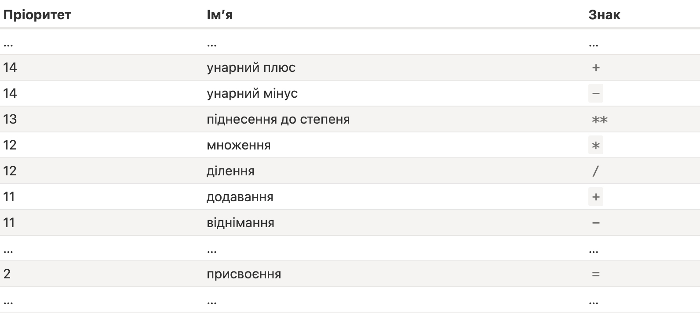

Операнд/аргумент - це те, до чого застосовуються оператори. Оператор є унарним, якщо він має один операнд (наприклад, мінус перед числом - унарне заперечення). Оператор є бінарним, якщо він має два операнди (одне число мінус інше)
JavaScript підтримує такі математичні операції:
якщо бінарний + застосовується до строк, він об’єднує їх let s = 'my_' + 'name'; // my_name. якщо будь-який з операндів є рядком, тоді інший також перетворюється на рядок alert( 2 + '1' ); // "21", alert(2 + 2 + '1' ); // "41", а не "221", спочатку стоять числа, вони додались, а потім строка перетворила їх в строку при додаванні alert('1' + 2 + 2); // "122", а не "14" спочатку стоїть строка, тому всі наступні дані теж перетворюються на строку
оператор плюс +, застосований до одного операнда, нічого не зробить, якщо операнд є числом. Але якщо операнд не є числом, унарний плюс перетворить його на число і працює як і Number(...). Необхідність перетворення рядків на числа виникає дуже часто. Наприклад, якщо ми отримуємо значення з полів HTML форми, вони зазвичай є рядками
Якщо вираз має більше одного оператора, порядок виконання визначається їхнім пріоритетом, або, іншими словами, типовим порядком першості операторів.
Кожен оператор має відповідний номер пріоритету. Першим виконується той оператор, який має найбільший номер пріоритету. Якщо пріоритет є однаковим, порядок виконання — зліва направо.

Виклик x = значення записує значення у x, а потім повертає його.
let a, b, c;
a = b = c = 2 + 2;
alert( a ); // 4
alert( b ); // 4
alert( c ); // 4
Ланцюгове присвоєння виконується справа наліво. Спочатку обчислюється найправіший вираз 2 + 2, а потім результат присвоюється змінним ліворуч: c, b та a. Зрештою всі змінні мають спільне значення.
let n = 2;
n += 5 // n = 7 (те ж саме, що n = n + 5)
n *= 2 // n = 14 (те ж саме, що n = n * 2)
Ці оператори мають такий же пріоритет, як і звичайне присвоєння, тому вони виконуються після більшості інших обчислень
Інкремент ++ збільшує змінну на 1
let counter = 2;
counter++; // працює так само, як counter = counter + 1, але запис коротше
alert( counter ); // 3
Декремент -- зменшує змінну на 1
Інкремент/декремент можуть застосовуватися лише до змінних. Спроба використати їх із значенням, як от 5++, призведе до помилки.
Коли оператор йде за змінною, він у “постфіксній формі” counter++.
“Префіксна форма” – це коли оператор йде попереду змінної: ++counter.
Префіксна форма збільшує змінну на 1 і повертає нове значення (при присвоюванні значення до змінної), тоді як постфіксна форма більшує змінну на 1,
але повертає старе значення (до збільшення/зменшення).
let a = ++counter // counter став на 1 більшим, і в а записалось нове значення
let a = counter++ // counter став на 1 більшим, але в а записалось його попереднє значення
Оператори ++/-- також можуть використовуватися всередині виразів. Їхній пріоритет вищий за більшість інших арифметичних операцій.
Побітові оператори розглядають аргументи як 32-бітні цілі числа та працюють на рівні їхнього двійкового представлення.
let a = (1 + 2, 3 + 4); // 7
оператор “кома” має дуже низький пріоритет, нижчий за =, тому дужки є важливими
Додавання пустого рядка "" + 1 перетворює число 1 на рядок: "" + 1 = "1";
Віднімання - (як і більшість математичних операцій) працює тільки з числами, воно перетворює порожній рядок "" на 0.
Віднімання завжди перетворює на числа, тому рядок " -9 " перетвориться на число -9 (ігноруючи пробіли навколо нього).
null стає 0 після числового перетворення.
undefined стає NaN після числового перетворення.
Символи пробілів по краях рядка ігноруються під час перетворення в число. Тому рядок, який містить лише символи \t, \n або «звичайні» пробіли, прирівнюється до пустого рядка і стає 0 після числового перетворення.
вікно запиту повертає ввід користувача як рядок prompt("число?", 1) // '1'. Щоб воно стало числом, можна перед prompt вставити унарний +